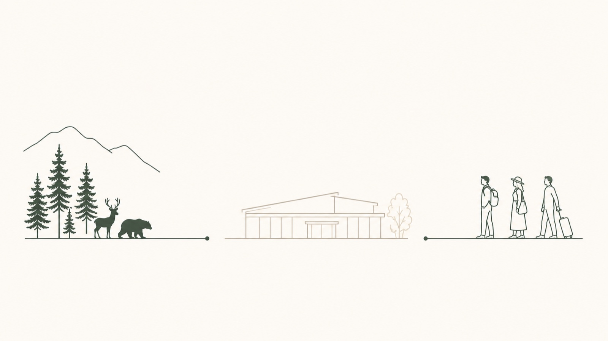
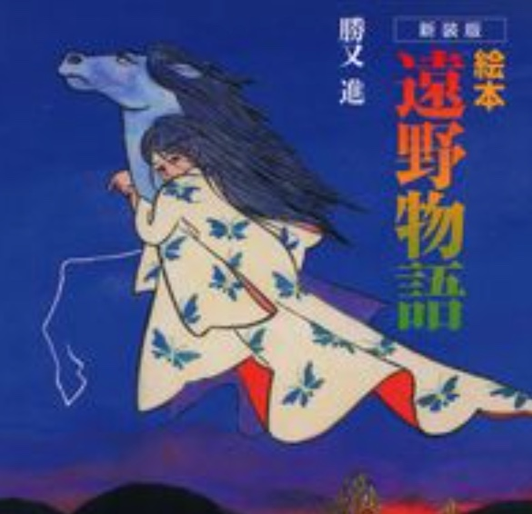
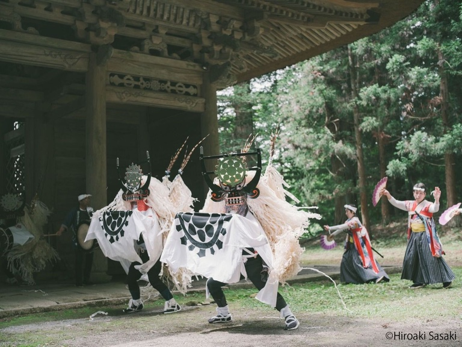
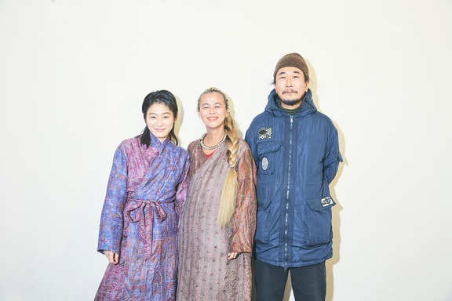
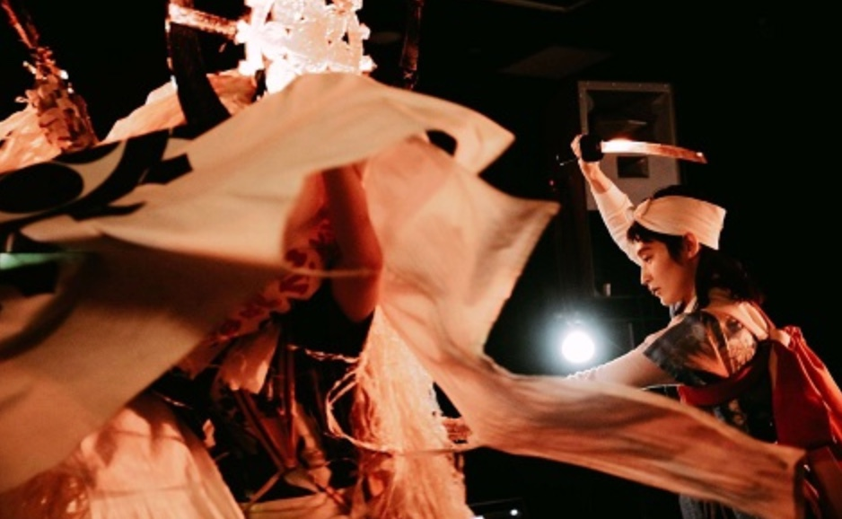
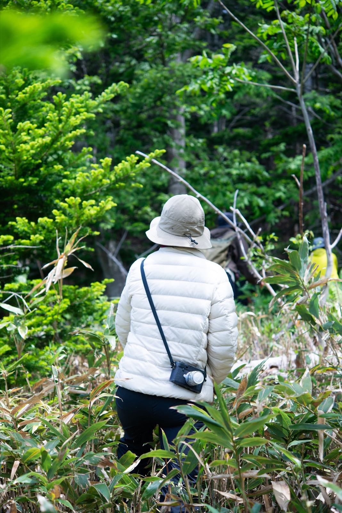
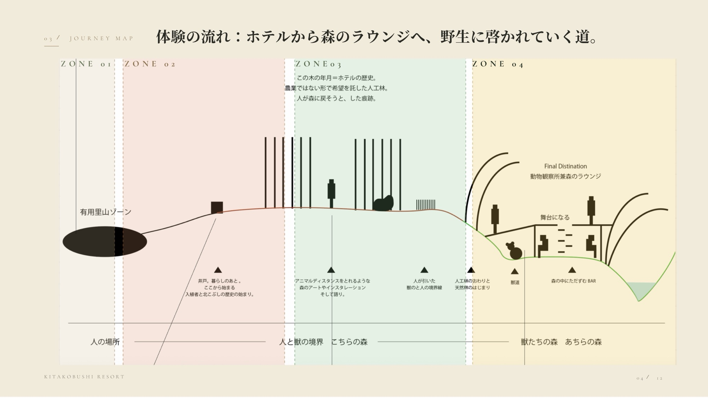
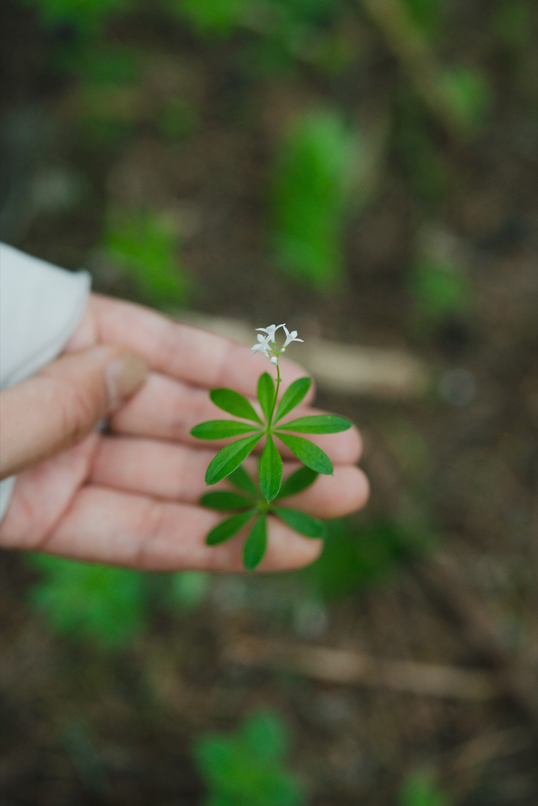

きたこぶしリゾートを作ってきた入植者と森の歴史から、
今に至るまでの人と森の交わり方について学び、
森のラウンジへ誘導するための体験型の散歩道。
体験が資本を呼び、文化として土地に蓄積していく新しい器の創造を目指す。
ホテルは、人間と野生をつなぐ結節点に立っている。公共だけではできないチャレンジ性がある。

人と森が切り離されてしまった。土の匂いで天気を読み、葉の揺れで獣の気配を察し、食べられるものと食べられないものを身体で判断する。——かつて確かに存在していた感覚や霊性を、現代の人間はもはや持たない。森は管理されるものになり、自然は鑑賞されるものになった。私たちは、その「野生」を編み直すことに挑戦したい。それは快適さや安心を提供する体験ではなく、獣の気配に怯え、名前もわからない植物を口にし、暗い森に一人で踏み込む緊張を伴うようなものだ。ときに不快でおどろおどろしく、しかし確かに身体が啓かれていくだろう。そうした時間の中にこそ、現代の生活が静かに奪い続けてきたものが眠っていると信じている。世界には、整えられた美しさや保証された快適さでは届かない体験がある。今私たちが求めているのは、消費される体験ではなく、自分の中に刻まれるものだ。私たちが知床で作るのは、森を媒介にした一つの器だ。嘘偽りのない自然を土台に、食・文化・芸術といったあらゆる営みが乗ることのできる、新しい森。北方文化圏の入り口に位置するこの地から、その器を通じて、新しい自然体験を世界へ発信することを目指す。いまから、“野生”を編み直そう。
柳田國男『遠野物語』の町（人口約2.4万人）。この10年、外部からクリエイターと資本が集まり続けている。




二枚看板——ホップ×ビール（産業）と、遠野物語×郷土芸能（文化）。移住者が醸造所やプロデュース会社を起こし、道の駅は年80万人・全国5位。
アーティストは観客ではなく「踊り手」として参加する。コムアイはしし踊りを稽古して奉納し、2025年にはK-BALLET×横尾忠則『踊る。遠野物語』が全国巡演へ。
富川岳（元広告会社→2016年29歳で移住）。文化事業「to know」を営み、自らしし踊りの踊り手となり、市の文化機関の運営委員も務める——外部人材が土地の文化の内側に入った例。
入口はNext Commons Lab（2016年・全国第1号拠点）。公募約500件から15名が移住し、醸造・デザイン・プロデュースの担い手に。
三層構造。需要を保証する企業（キリン: 1963年からホップ全量買取・1.5億円出資）が上にいて、市が協力隊とふるさと納税で人と金の入口を作り、民間法人群が実装する。
「作れば売れる」状態が先にあるから、高リスクの挑戦に人が入れる。
入植者たちが切り拓き、人と共存する暮らしの舞台となってきた知床の森。その歴史と現在の森のありようを、歩いてたどってもらう——それが「野生の哲学の道」。
歩くための道ではない。
記憶し、学び、感覚を取り戻すための道。


人里との別れ。ゼロ地点。シェフが収穫する有用植物の里山。
入植の記憶と出逢う。井戸を覗き、一斗缶を叩いて森へ入る。
間伐林とアートの道。人参畑のラインが「この先は獣の森」と告げる。
天然林へ。獣道を観るラウンジ、香木バー、森の展示室。結び直しの終点。
これまでの資料に登場した植物を、ゾーンごとに整理した。カードを押すと、写真と詳細が開く。

順番に意味がある——まず安全（柵）、つぎに木、それから道と人。アートと建築はこの土台の上に載せる。
シカは植えた木を食べ尽くす。ヒグマとの距離は運まかせにできない。
小さく囲えば安いが窮屈。大きく囲えば自由だが高い。
高密度化した林は、間引くと風倒木のおそれがある。
広葉樹はシカに食われ、柵の内側でしか育たない。
森の手入れは道から始まる。作業道は幅2.5m。
「少しずつ」は森林組合の枠組みと合わない。
| 案 | 範囲 | 特徴 |
|---|---|---|
| ミニマム | 散歩道まわり（約1ha） | 最も安い。「囲われてる感」は出る |
| 中間 | 人の森ぜんぶ | ゾーン設計と整合 |
| マックス | 敷地全域（約8ha） | 森の再生まで守れる。最も高い |
基準線は、いま入っている森林組合の助成（補助金で皆伐して植え直す＝最も軽いが、森の姿は選べない）。そこからどれだけ離れて、どんな森を手に入れるか——が費用の議論の全体。
| 着手順 | やること | 備考 |
|---|---|---|
| 第1段 | 柵＋道＋最初の植栽・入れ替え着手 | 森の都合で先送りできない |
| 第2段 | ランドマーク＋アート＋散歩道の仕上げ | 建築なしでも体験は成立 |
| 第3段 | ラウンジ建築 | 伐った木で建てる |
回収は森単体ではなく、宿泊単価・ブランド価値・連泊で見る（滞在型観光への転換と同じ線上）。
知床の絵を、ひとつの様式では描かない。理由は土地の履歴にある——ここは何度も境界が引かれ、混ざり、塗り替えられてきた場所だから。
海獣狩猟民の文化。クマ儀礼の源流。リゾートの足元の遺跡から出土する。
この半島の名の由来（sir etok＝大地の突端）。人と獣が対等に向き合う世界観。
測量の線、畑、人工林。桑島家3世代の歴史はここに連なる。
いま引かれている境界。この森づくり自体が、その最前線にある。
この半島の名の由来（sir etok＝大地の突端）。人と獣が対等に向き合う世界観。
測量の線、畑、人工林。桑島家3世代の歴史はここに連なる。
いま引かれている境界。この森づくり自体が、その最前線にある。
すやり霞と雲で体験を分節しながら、一枚の物語地図として読ませる。海外に対して最も求心力のある日本的様式。
測量図の格子、五稜星のラベル、記録画の淡彩。桑島家3世代の歴史に直結する視覚言語。
イラストは残っていない文化。土器の貼付文・骨角器・クマ骨塚など、リゾートの足元から出土する造形から再構成する。
植生の描き込みと、余白・気配の品位。世界のリゾートポスター・メゾンの文法。
アイヌ語 sir-etok。「終わり」ではなく「大地が海へ差し出した先端」。ウトロ＝ウトゥルチクㇱ「その間を・我々が・通る・所」——巨岩の間の水路を舟で抜けて入る集落だった。
| 年代 | 出来事 | 本プロジェクトへの接続 |
|---|---|---|
| 5〜9世紀 | オホーツク文化——海獣狩猟民の集落 | 足元のチャシコツ岬上遺跡（国史跡）に住居内ヒグマ骨塚＝クマ儀礼の現地証拠 |
| 13世紀〜 | アイヌ文化期——カムイの世界観 | ヒグマ・シマフクロウ・シャチが神。半島の名もアイヌ語 |
| 1807 | 津軽藩士殉難事件（越冬100名中72名死亡） | 176年後にねぷた交流へ——「鎮魂が祭りになる」土地内先例（野性祭の思想） |
| 1858 | 松浦武四郎が知床を踏査、ウトロ番屋に一泊 | 番屋＝「働く者が集い火を囲み泊まる場所」。ロビーの原型 |
| 1917 | 桑島家の曾祖父が香川からウトロへ入植 | 字名「ウトロ香川」が現存。3万坪のうち1.5万坪を手で拓く |
| 1960 | 離農し「桑島旅館」創業（5室22名） | 「人の手で拓いた土地は、人の手で森に戻す」——トドマツ約1.5万本を植林。今回の森はこの直系 |
| 1970-71 | 「知床旅情」ブーム | 宿泊客を毎日断る盛況→55室から140室へ拡大 |
| 1977 | しれとこ100平方メートル運動 | 離農跡地を森に戻す世界的先駆。シカ食害と柵の実証データは本計画の根拠（論点4） |
| 1964 / 2005 | 国立公園指定 ∕ 世界自然遺産登録 | 入込は1998年の180万人がピークで漸減——「量から質へ」が現地の公式認識＝本プロジェクトの追い風 |
| 2011 / 2023 | 知床五湖の利用調整 ∕ ATWS北海道開催 | 「レクチャー→立入認定」が体験価値になる先例。AT文脈の中核目的地に |
| 昔の知恵 | 森の哲学の道への翻訳 |
|---|---|
| 熊道側にニンジンを「お供え物」として植えた | ZONE03の人参畑ライン＝境界の再現 |
| 一斗缶を鳴らして歩いた | ZONE02のランドマーク。音による存在告知 |
| 「お互い無視していれば何もしない」 | 「クマを観に行く」のではなく「クマの世界に入らせてもらう」設計 |
| 資料 | 中身 |
|---|---|
| リサーチブック | 桑島家の100年・知床通史・イラスト4方向・遠野リサーチの全文 |
| 8/7 提案の論点整理 v3.1 | 森の実装9論点の詳細（本資料04章の元） |
| オホーツク文化ギャラリー | クマ意匠・土器・遺跡景観など画像51点 |
| マスターMTG資料 | 案件全体の経緯・決定事項の正本 |